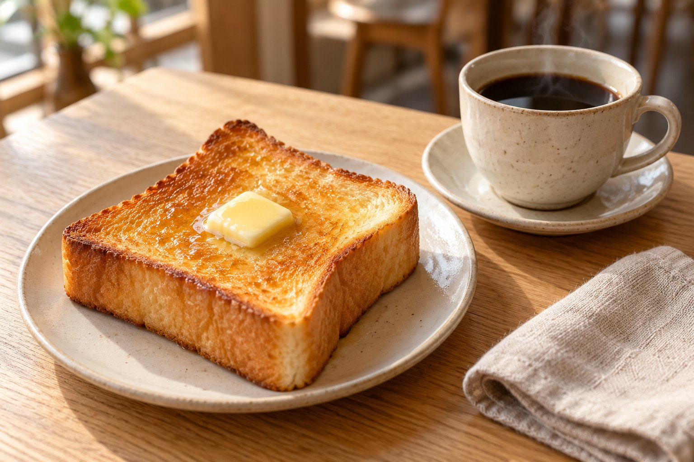

MENU
珈琲と、おやつ。
香りを選んで、甘いものをひとつ。
その日の気分で、ゆっくりどうぞ。
02 / SWEETS & LIGHT MEALS
小腹と、気持ちを満たすもの。

焼きたての香りと、
いつもの味。
価格はすべて税込の架空設定です。写真はAI生成によるイメージです。アレルギー情報を含む実際の商品提供はありません。
A SEAT BY THE WINDOW
MENU
香りを選んで、甘いものをひとつ。
その日の気分で、ゆっくりどうぞ。
02 / SWEETS & LIGHT MEALS

価格はすべて税込の架空設定です。写真はAI生成によるイメージです。アレルギー情報を含む実際の商品提供はありません。
A SEAT BY THE WINDOW